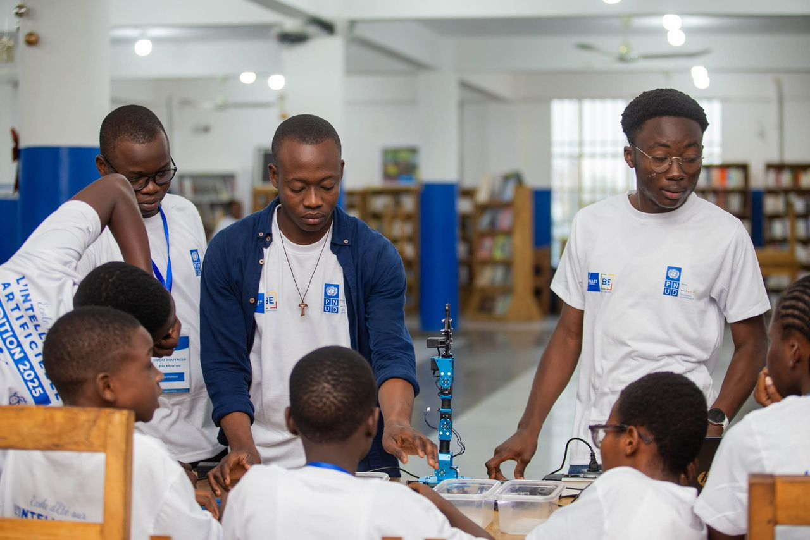
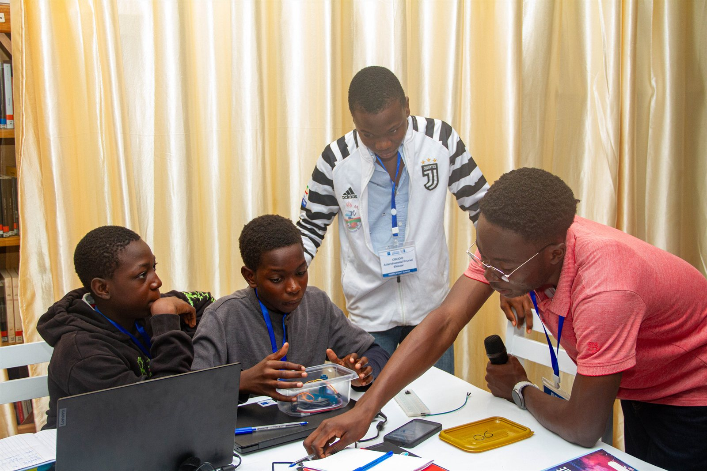
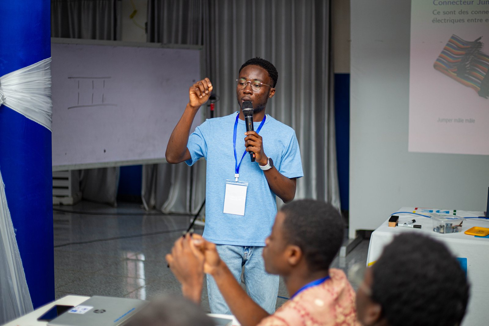
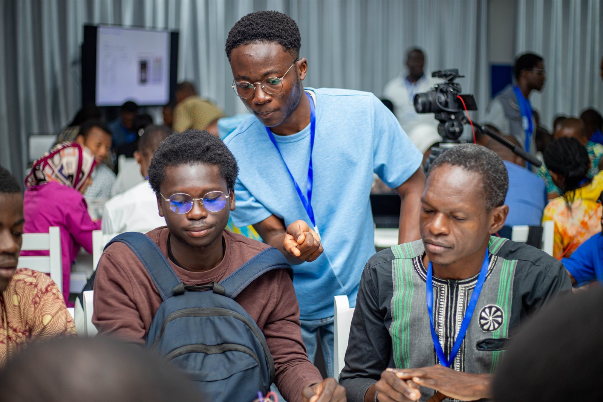
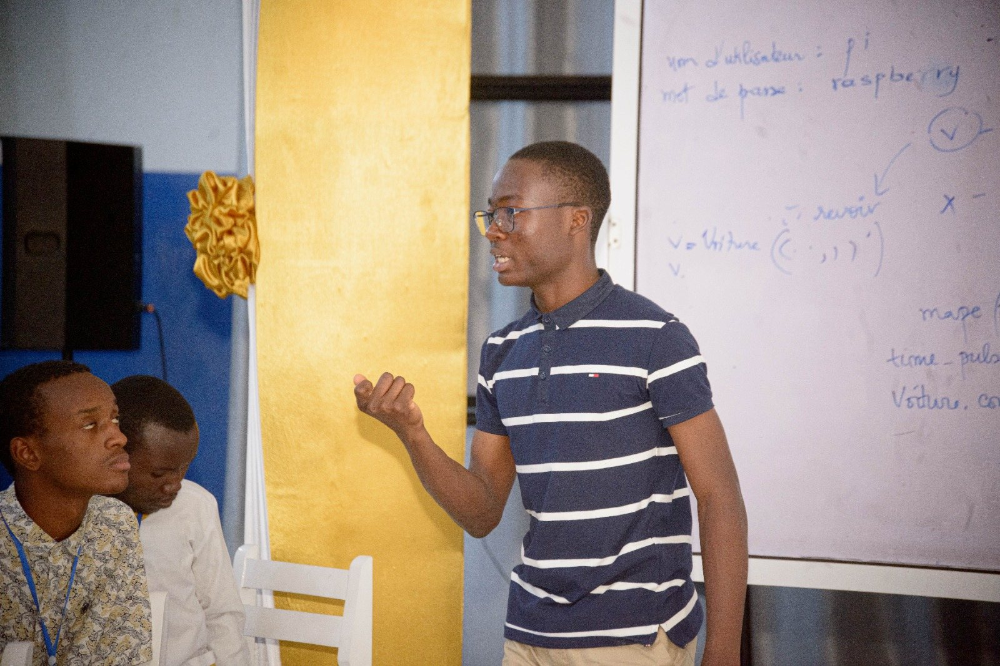

Expérience · 2022 – 2025
Formateur -
Robotique & IA embarquée


Le programme
L'EEIA (École d'Été sur l'Intelligence Artificielle) est le plus grand rendez-vous éducatif consacré à l'IA en Afrique de l'Ouest. Organisée au Bénin par la Fondation Vallet, Bénin Excellence et le PNUD, elle réunit chaque été une centaine de jeunes sélectionnés sur dossier, pendant quatre semaines, autour d'une pédagogie délibérément pratique - 25 % de théorie, 75 % de pratique. En cinq éditions, le programme a formé plus de 1 800 participants venus de 15 pays.
Le cursus s'articule en quatre temps : programmation en Python, machine learning, robotique et électronique embarquée, puis projets d'application. En parallèle, l'EEIA Junior accueille des collégiens de la 6ᵉ à la 3ᵉ pour une initiation à l'informatique, à Scratch et à l'électronique.
Mon rôle
J'interviens comme formateur depuis 2022. J'assiste le professeur principal sur le volet programmation, puis je prends en charge des cours durant la semaine consacrée à la robotique et à l'électronique embarquée : LED et composants, capteurs et circuits, microcontrôleurs, robotique, domotique, drones et véhicules à évitement d'obstacles. J'encadre également les plus jeunes de l'EEIA Junior.
La dernière semaine est le point d'orgue : les participants conçoivent un projet complet, du concept au prototype fonctionnel, en quelques jours. J'ai encadré le projet de véhicule autonome de 2022 à 2024 - celui présenté dans mes projets - puis, en 2025, le bras robotique jouant au tic-tac-toe.
Un même concept - un microcontrôleur, un capteur - ne s'explique pas de la même façon aux collégiens de l'EEIA Junior et aux participants du programme Senior. Passer d'un public à l'autre est ce qui m'a le plus appris sur ma propre compréhension : on ne peut pas simplifier ce qu'on n'a pas vraiment compris.
En action





Ce que j'ai transmis
- Programmation Python - assistance du professeur principal en travaux pratiques
- Électronique de base - LED, composants, capteurs et circuits
- Microcontrôleurs et systèmes embarqués
- Robotique et domotique
- Drones et véhicules à évitement d'obstacles (anticollision)
- Encadrement des projets de fin de session - véhicule autonome (2022 – 2024), bras robotique tic-tac-toe (2025)
- EEIA Junior - initiation des collégiens (6ᵉ à 3ᵉ) à l'informatique et à l'électronique
Cérémonie EEIA 2021
Lauréat du 2ᵉ prix national de la cohorte EEIA 2021 - parcours intensif d'apprentissage en intelligence artificielle et robotique embarquée.